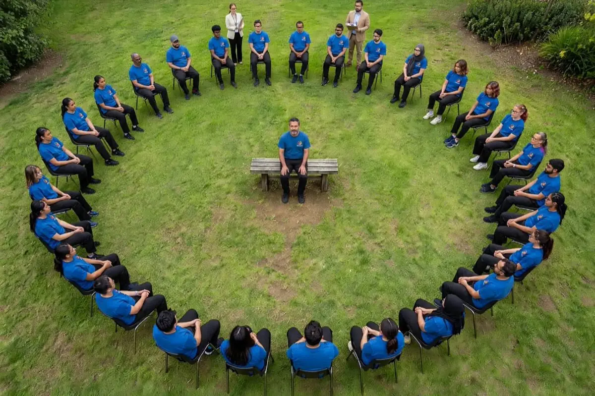

Dimensión 01 de 07
Terapéutica
Procesos de comunidad terapéutica con espacios grupales e individuales donde cada persona se reconoce, comparte su historia y se fortalece en compañía de otros.
- Comunidad terapéutica
- Espacios grupales
- Espacios individuales
Terapias de esta dimensión
Quiero saber más